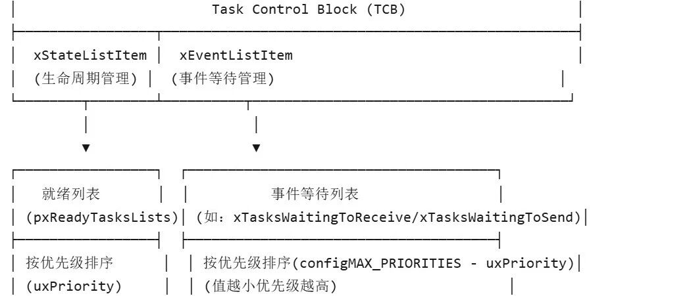

freertos之task模块（下）
freertos任务管理含有如下几部分内容：
1.优先级处理
2. 创建任务
3.启动第1个任务
4. 任务调度
5.任务状态
在之前的文章中，我们已经详细学过前4条，在task模块的最后一篇文章中，我会详细讲解任务状态以及任务在这些状态之间的转换方式。
typedef struct tskTaskControlBlock /* The old naming convention is used to prevent breaking kernel aware debuggers. */{volatile StackType_t * pxTopOfStack; /*< Points to the location of the last item placed on the tasks stack. THIS MUST BE THE FIRST MEMBER OF THE TCB STRUCT. */xMPU_SETTINGS xMPUSettings; /*< The MPU settings are defined as part of the port layer. THIS MUST BE THE SECOND MEMBER OF THE TCB STRUCT. */ListItem_t xStateListItem; /*< The list that the state list item of a task is reference from denotes the state of that task (Ready, Blocked, Suspended ). */ListItem_t xEventListItem; /*< Used to reference a task from an event list. */UBaseType_t uxPriority; /*< The priority of the task. 0 is the lowest priority. */StackType_t * pxStack; /*< Points to the start of the stack. */char pcTaskName[ configMAX_TASK_NAME_LEN ]; /*< Descriptive name given to the task when created. Facilitates debugging only. */ /*lint !e971 Unqualified char types are allowed for strings and single characters only. */......} tskTCB;
在任务的TCB中，我们可以看到两个链表项：
ListItem_t xStateListItem; ListItem_t xEventListItem; xStateListItem叫做任务状态项，它会被插入不同状态链表如readylist/suspendlist/blocklist 等以实现任务的状态切换。xEventListItem叫做任务事件项，它会在任务等待临界区/有限资源时被插入对应事件的等待链表进行对资源的排队利用。struct xLIST_ITEM{listFIRST_LIST_ITEM_INTEGRITY_CHECK_VALUE /*< Set to a known value if configUSE_LIST_DATA_INTEGRITY_CHECK_BYTES is set to 1. */configLIST_VOLATILE TickType_t xItemValue; /*< The value being listed. In most cases this is used to sort the list in descending order. */struct xLIST_ITEM * configLIST_VOLATILE pxNext; /*< Pointer to the next ListItem_t in the list. */struct xLIST_ITEM * configLIST_VOLATILE pxPrevious; /*< Pointer to the previous ListItem_t in the list. */void * pvOwner; /*< Pointer to the object (normally a TCB) that contains the list item. There is therefore a two way link between the object containing the list item and the list item itself. */struct xLIST * configLIST_VOLATILE pxContainer; /*< Pointer to the list in which this list item is placed (if any). */listSECOND_LIST_ITEM_INTEGRITY_CHECK_VALUE /*< Set to a known value if configUSE_LIST_DATA_INTEGRITY_CHECK_BYTES is set to 1. */};typedef struct xLIST_ITEM ListItem_t; /* For some reason lint wants this as two separate definitions. */
结构体成员具体介绍：
listFIRST_LIST_ITEM_INTEGRITY_CHECK_VALUE | 头部校验值configUSE_LIST_DATA_INTEGRITY_CHECK_BYTES=1，写入固定值（如 0x5A5A）用于检测内存越界。 | |
xItemValue | TickType_tuint32_t） | 排序值 - 在延时列表中表示任务唤醒时间戳。 - 在优先级就绪列表中表示任务优先级。 |
pxNext | struct xLIST_ITEM* | 指向下一个节点 |
pxPrevious | struct xLIST_ITEM* | 指向上一个节点 |
pvOwner | void* | 所有者对象指针TCB_t），建立任务与链表节点的双向关联。例如：- 通过 TCB 可找到任务在链表中的位置。- 通过节点可反向定位到所属任务。 |
pxContainer | struct xLIST* | 所属链表指针NULL，表示节点未插入任何链表；非 NULL 指向链表头（如就绪列表、延时列表）。 |
listSECOND_LIST_ITEM_INTEGRITY_CHECK_VALUE | 尾部校验值 |


| Uninitialized | ||
| In Ready List | pxReadyTasksLists[priority] | |
| In Blocked List | pxDelayedTaskListpxOverflowDelayedTaskList | |
| In Suspended List | xSuspendedTaskList | |
| In Termination List | xTasksWaitingTermination | |
| Deleted |
负责切换这些状态的函数:
1.任务创建
prvInitialiseNewTask 任务创建时初始化prvAddTaskToReadyList 加入就绪链表2.任务暂停/继续vTaskDelay/vTaskDelayUntil 进入延时阻塞xTaskIncrementTick tick中断检查超时3.任务阻塞/恢复vTaskSuspend 挂起任务vTaskResume/xTaskResumeFromISR 恢复任务4.任务删除vTaskDelete 删除任务prvCheckTasksWaitingTermination 空闲任务清理资源
void vListInitialiseItem( ListItem_t * const pxItem ){/* Make sure the list item is not recorded as being on a list. */pxItem->pxContainer = NULL;/* Write known values into the list item if* configUSE_LIST_DATA_INTEGRITY_CHECK_BYTES is set to 1. */listSET_FIRST_LIST_ITEM_INTEGRITY_CHECK_VALUE( pxItem );listSET_SECOND_LIST_ITEM_INTEGRITY_CHECK_VALUE( pxItem );}
这个函数在task初始化中被调用，负责初始化TCB的链表项，状态链表项和事件链表项都是它负责初始化。它会将链表项的所有者记为NULL，并且设置了首尾的防溢出字符。
在链表项被初始化之后，task初始化会立即将TCB链表项的所有者从指向NULL改为指向对应task的TCB，所以在用户的视野中，所有TCB初始化后自带链表项。
static void prvAddNewTaskToReadyList( TCB_t * pxNewTCB ){/* Ensure interrupts don't access the task lists while the lists are being* updated. */taskENTER_CRITICAL();{uxCurrentNumberOfTasks++;if( pxCurrentTCB == NULL ){/* There are no other tasks, or all the other tasks are in* the suspended state - make this the current task. */pxCurrentTCB = pxNewTCB;if( uxCurrentNumberOfTasks == ( UBaseType_t ) 1 ){/* This is the first task to be created so do the preliminary* initialisation required. We will not recover if this call* fails, but we will report the failure. */prvInitialiseTaskLists();}else{mtCOVERAGE_TEST_MARKER();}}else{/* If the scheduler is not already running, make this task the* current task if it is the highest priority task to be created* so far. */if( xSchedulerRunning == pdFALSE ){if( pxCurrentTCB->uxPriority <= pxNewTCB->uxPriority ){pxCurrentTCB = pxNewTCB;}else{mtCOVERAGE_TEST_MARKER();}}else{mtCOVERAGE_TEST_MARKER();}}uxTaskNumber++;{/* Add a counter into the TCB for tracing only. */pxNewTCB->uxTCBNumber = uxTaskNumber;}traceTASK_CREATE( pxNewTCB );prvAddTaskToReadyList( pxNewTCB );portSETUP_TCB( pxNewTCB );}taskEXIT_CRITICAL();if( xSchedulerRunning != pdFALSE ){/* If the created task is of a higher priority than the current task* then it should run now. */if( pxCurrentTCB->uxPriority < pxNewTCB->uxPriority ){taskYIELD_IF_USING_PREEMPTION();}else{mtCOVERAGE_TEST_MARKER();}}else{mtCOVERAGE_TEST_MARKER();}}
void vTaskDelay( const TickType_t xTicksToDelay ){BaseType_t xAlreadyYielded = pdFALSE;/* A delay time of zero just forces a reschedule. */if( xTicksToDelay > ( TickType_t ) 0U ){configASSERT( uxSchedulerSuspended == 0 );vTaskSuspendAll();{traceTASK_DELAY();/* A task that is removed from the event list while the* scheduler is suspended will not get placed in the ready* list or removed from the blocked list until the scheduler* is resumed.** This task cannot be in an event list as it is the currently* executing task. */prvAddCurrentTaskToDelayedList( xTicksToDelay, pdFALSE );}xAlreadyYielded = xTaskResumeAll();}else{mtCOVERAGE_TEST_MARKER();}/* Force a reschedule if xTaskResumeAll has not already done so, we may* have put ourselves to sleep. */if( xAlreadyYielded == pdFALSE ){portYIELD_WITHIN_API();}else{mtCOVERAGE_TEST_MARKER();}}
uxListRemove 将当前正在运行的任务的 xStateListItem 移出就绪列表。xTickCount + xTicksToDelay）将任务的 xStateListItem 存入xItemValue，并按升序插入 xDelayedTaskList（或 pxOverflowDelayedTaskList，若溢出）。eTaskState，被设为 eBlocked（阻塞态）。（4）启用调度器再调度一个任务来执行
void vTaskSuspend( TaskHandle_t xTaskToSuspend ){TCB_t * pxTCB;taskENTER_CRITICAL();{/* If null is passed in here then it is the running task that is* being suspended. */pxTCB = prvGetTCBFromHandle( xTaskToSuspend );traceTASK_SUSPEND( pxTCB );/* Remove task from the ready/delayed list and place in the* suspended list. */if( uxListRemove( &( pxTCB->xStateListItem ) ) == ( UBaseType_t ) 0 ){taskRESET_READY_PRIORITY( pxTCB->uxPriority );}else{mtCOVERAGE_TEST_MARKER();}/* Is the task waiting on an event also? */if( listLIST_ITEM_CONTAINER( &( pxTCB->xEventListItem ) ) != NULL ){( void ) uxListRemove( &( pxTCB->xEventListItem ) );}else{mtCOVERAGE_TEST_MARKER();}vListInsertEnd( &xSuspendedTaskList, &( pxTCB->xStateListItem ) );{BaseType_t x;for( x = 0; x < configTASK_NOTIFICATION_ARRAY_ENTRIES; x++ ){if( pxTCB->ucNotifyState[ x ] == taskWAITING_NOTIFICATION ){/* The task was blocked to wait for a notification, but is* now suspended, so no notification was received. */pxTCB->ucNotifyState[ x ] = taskNOT_WAITING_NOTIFICATION;}}}}taskEXIT_CRITICAL();if( xSchedulerRunning != pdFALSE ){/* Reset the next expected unblock time in case it referred to the* task that is now in the Suspended state. */taskENTER_CRITICAL();{prvResetNextTaskUnblockTime();}taskEXIT_CRITICAL();}else{mtCOVERAGE_TEST_MARKER();}if( pxTCB == pxCurrentTCB ){if( xSchedulerRunning != pdFALSE ){/* The current task has just been suspended. */configASSERT( uxSchedulerSuspended == 0 );portYIELD_WITHIN_API();}else{/* The scheduler is not running, but the task that was pointed* to by pxCurrentTCB has just been suspended and pxCurrentTCB* must be adjusted to point to a different task. */if( listCURRENT_LIST_LENGTH( &xSuspendedTaskList ) == uxCurrentNumberOfTasks ) /*lint !e931 Right has no side effect, just volatile. */{/* No other tasks are ready, so set pxCurrentTCB back to* NULL so when the next task is created pxCurrentTCB will* be set to point to it no matter what its relative priority* is. */pxCurrentTCB = NULL;}else{vTaskSwitchContext();}}}else{mtCOVERAGE_TEST_MARKER();}}
任务挂起和任务暂停不一样，任务挂起是主动中止一个不重要/有问题的任务，不会自动恢复。以下是vTaskSuspend（）的机制
（1）从就绪/延时列表移除任务
uxListRemove 将任务的 xStateListItem 移出其所在列表（就绪列表或延时列表）。（2）处理事件等待列表（若存在）
xEventListItem 是否在事件等待列表（如信号量、队列）。（3）插入挂起列表
xStateListItem 插入全局挂起列表（xSuspendedTaskList）尾部，标记任务为挂起状态（eSuspended）。（4）启动调度器找再调度一个任务并运行
5.vTaskResume（）任务恢复
void vTaskResume( TaskHandle_t xTaskToResume ){TCB_t * const pxTCB = xTaskToResume;/* It does not make sense to resume the calling task. */configASSERT( xTaskToResume );/* The parameter cannot be NULL as it is impossible to resume the* currently executing task. */if( ( pxTCB != pxCurrentTCB ) && ( pxTCB != NULL ) ){taskENTER_CRITICAL();{if( prvTaskIsTaskSuspended( pxTCB ) != pdFALSE ){traceTASK_RESUME( pxTCB );/* The ready list can be accessed even if the scheduler is* suspended because this is inside a critical section. */( void ) uxListRemove( &( pxTCB->xStateListItem ) );prvAddTaskToReadyList( pxTCB );/* A higher priority task may have just been resumed. */if( pxTCB->uxPriority >= pxCurrentTCB->uxPriority ){/* This yield may not cause the task just resumed to run,* but will leave the lists in the correct state for the* next yield. */taskYIELD_IF_USING_PREEMPTION();}else{mtCOVERAGE_TEST_MARKER();}}else{mtCOVERAGE_TEST_MARKER();}}taskEXIT_CRITICAL();}else{mtCOVERAGE_TEST_MARKER();}}
vTaskResume（）和vTaskSuspend（）配套使用，vTaskResume（）负责恢复挂起的任务，且全程需要临界区保护。
（1）检查任务是否被挂起
prvTaskIsTaskSuspended 检查任务的 xStateListItem 是否在挂起列表（xSuspendedTaskList）中，确保只有挂起的任务能被恢复。（2）从挂起列表移除任务
xStateListItem 从挂起列表移除，清除其 pxContainer 标记。（3）将任务加入就绪列表
- 根据优先级插入就绪列表
将 xStateListItem插入对应优先级的pxReadyTasksLists。 - 更新优先级位图
若该优先级就绪列表从空变为非空，设置 uxTopReadyPriority中的对应位（优化调度器查找效率）。
（4）触发任务切换（若需）
void vTaskDelete( TaskHandle_t xTaskToDelete ){TCB_t * pxTCB;taskENTER_CRITICAL();{/* If null is passed in here then it is the calling task that is* being deleted. */pxTCB = prvGetTCBFromHandle( xTaskToDelete );/* Remove task from the ready/delayed list. */if( uxListRemove( &( pxTCB->xStateListItem ) ) == ( UBaseType_t ) 0 ){taskRESET_READY_PRIORITY( pxTCB->uxPriority );}else{mtCOVERAGE_TEST_MARKER();}/* Is the task waiting on an event also? */if( listLIST_ITEM_CONTAINER( &( pxTCB->xEventListItem ) ) != NULL ){( void ) uxListRemove( &( pxTCB->xEventListItem ) );}else{mtCOVERAGE_TEST_MARKER();}/* Increment the uxTaskNumber also so kernel aware debuggers can* detect that the task lists need re-generating. This is done before* portPRE_TASK_DELETE_HOOK() as in the Windows port that macro will* not return. */uxTaskNumber++;if( pxTCB == pxCurrentTCB ){/* A task is deleting itself. This cannot complete within the* task itself, as a context switch to another task is required.* Place the task in the termination list. The idle task will* check the termination list and free up any memory allocated by* the scheduler for the TCB and stack of the deleted task. */vListInsertEnd( &xTasksWaitingTermination, &( pxTCB->xStateListItem ) );/* Increment the ucTasksDeleted variable so the idle task knows* there is a task that has been deleted and that it should therefore* check the xTasksWaitingTermination list. */++uxDeletedTasksWaitingCleanUp;/* Call the delete hook before portPRE_TASK_DELETE_HOOK() as* portPRE_TASK_DELETE_HOOK() does not return in the Win32 port. */traceTASK_DELETE( pxTCB );/* The pre-delete hook is primarily for the Windows simulator,* in which Windows specific clean up operations are performed,* after which it is not possible to yield away from this task -* hence xYieldPending is used to latch that a context switch is* required. */portPRE_TASK_DELETE_HOOK( pxTCB, &xYieldPending );}else{--uxCurrentNumberOfTasks;traceTASK_DELETE( pxTCB );prvDeleteTCB( pxTCB );/* Reset the next expected unblock time in case it referred to* the task that has just been deleted. */prvResetNextTaskUnblockTime();}}taskEXIT_CRITICAL();/* Force a reschedule if it is the currently running task that has just* been deleted. */if( xSchedulerRunning != pdFALSE ){if( pxTCB == pxCurrentTCB ){configASSERT( uxSchedulerSuspended == 0 );portYIELD_WITHIN_API();}else{mtCOVERAGE_TEST_MARKER();}}}
这个函数负责从调度链表中删除任务，若这个任务正在运行，我们不能直接删除它（会崩溃)，若这个任务不在运行，我们则可以直接free掉它的栈和TCB
(1) 从就绪/延时列表移除
uxListRemove 将任务的 xStateListItem 移出就绪列表或延时列表。若uxListRemove返回值为 0（表示该优先级的就绪列表已空），通过 taskRESET_READY_PRIORITY 清除优先级位图中的对应位。(2) 从事件等待列表移除（若存在）
（3）处理删除当前任务的情况：加入终止待清理列表
xTasksWaitingTermination。再递增 uxDeletedTasksWaitingCleanUp，通知空闲任务（Idle Task）有任务待清理。（4）调用删除钩子函数
若任务可以自我删除（不正在运行），则直接free它的栈和TCB
（5）重置最近唤醒时间
prvResetNextTaskUnblockTime();xNextTaskUnblockTime。（6） 触发任务切换（若删除当前任务）
7.清除待清除任务prvCheckTasksWaitingTermination（）
static void prvCheckTasksWaitingTermination( void ){/** THIS FUNCTION IS CALLED FROM THE RTOS IDLE TASK **/{TCB_t * pxTCB;/* uxDeletedTasksWaitingCleanUp is used to prevent taskENTER_CRITICAL()* being called too often in the idle task. */while( uxDeletedTasksWaitingCleanUp > ( UBaseType_t ) 0U ){taskENTER_CRITICAL();{pxTCB = listGET_OWNER_OF_HEAD_ENTRY( ( &xTasksWaitingTermination ) ); /*lint !e9079 void * is used as this macro is used with timers and co-routines too. Alignment is known to be fine as the type of the pointer stored and retrieved is the same. */( void ) uxListRemove( &( pxTCB->xStateListItem ) );--uxCurrentNumberOfTasks;--uxDeletedTasksWaitingCleanUp;}taskEXIT_CRITICAL();prvDeleteTCB( pxTCB );}}}
listGET_OWNER_OF_HEAD_ENTRY 从终止列表头部获取任务控制块（TCB_t*）。调用 uxListRemove 将任务的 xStateListItem 从终止列表移除，断开关联。prvDeleteTCB 释放任务占用的资源，其中：任务事件项xEventListItem 是 FreeRTOS 任务控制块（TCB）中的关键成员，用于管理任务在各种同步和通信机制中的等待状态，主要功能包括：
事件等待排序 按优先级管理任务在事件列表中的顺序
状态跟踪 标识任务当前等待的资源类型
快速唤醒 高效地从事件列表中定位和移除任务
类似于任务状态项，任务事件项也有许多处理函数：
1. 优先级设置相关函数
vTaskPrioritySet()
更新 xEventListItem的值：configMAX_PRIORITIES - newPriority确保事件列表中的任务按新优先级重新排序 xTaskPriorityInherit()/xTaskPriorityDisinherit()
继承/恢复优先级时同步更新 xEventListItem值维护事件列表中的优先级顺序一致性
2. 任务挂起/恢复相关函数
vTaskSuspend()
从事件列表（如有）移除 xEventListItem将 xStateListItem移到挂起列表xTaskResumeAll()
处理待处理就绪列表时使用 xEventListItem跟踪任务
3. 事件列表管理函数
vTaskPlaceOnEventList()
将 xEventListItem插入指定事件列表与 xStateListItem配合实现阻塞等待vTaskPlaceOnEventListRestricted()
优化版插入，直接使用 vListInsertEnd假设只有一个等待者，跳过优先级排序 xTaskRemoveFromEventList()
从事件列表移除 xEventListItem将任务转移到就绪列表
4. 任务通知相关函数
xTaskGenericNotifyFromISR()
检查 xEventListItem容器是否为NULL（验证任务状态）唤醒时通过 xStateListItem管理就绪状态vTaskGenericNotifyGiveFromISR()
类似通知机制，同样验证 xEventListItem状态通过递增通知值模拟信号量操作
5. 辅助函数
uxTaskResetEventItemValue()
专门用于重置 xEventListItem的值恢复为默认优先级排序值 prvTaskIsTaskSuspended()
检查 xEventListItem容器状态判断任务是否真正挂起
void vTaskPrioritySet( TaskHandle_t xTask,UBaseType_t uxNewPriority ){TCB_t * pxTCB;UBaseType_t uxCurrentBasePriority, uxPriorityUsedOnEntry;BaseType_t xYieldRequired = pdFALSE;configASSERT( ( uxNewPriority < configMAX_PRIORITIES ) );/* Ensure the new priority is valid. */if( uxNewPriority >= ( UBaseType_t ) configMAX_PRIORITIES ){uxNewPriority = ( UBaseType_t ) configMAX_PRIORITIES - ( UBaseType_t ) 1U;}else{mtCOVERAGE_TEST_MARKER();}taskENTER_CRITICAL();{/* If null is passed in here then it is the priority of the calling* task that is being changed. */pxTCB = prvGetTCBFromHandle( xTask );traceTASK_PRIORITY_SET( pxTCB, uxNewPriority );{uxCurrentBasePriority = pxTCB->uxBasePriority;}{uxCurrentBasePriority = pxTCB->uxPriority;}if( uxCurrentBasePriority != uxNewPriority ){/* The priority change may have readied a task of higher* priority than the calling task. */if( uxNewPriority > uxCurrentBasePriority ){if( pxTCB != pxCurrentTCB ){/* The priority of a task other than the currently* running task is being raised. Is the priority being* raised above that of the running task? */if( uxNewPriority >= pxCurrentTCB->uxPriority ){xYieldRequired = pdTRUE;}else{mtCOVERAGE_TEST_MARKER();}}else{/* The priority of the running task is being raised,* but the running task must already be the highest* priority task able to run so no yield is required. */}}else if( pxTCB == pxCurrentTCB ){/* Setting the priority of the running task down means* there may now be another task of higher priority that* is ready to execute. */xYieldRequired = pdTRUE;}else{/* Setting the priority of any other task down does not* require a yield as the running task must be above the* new priority of the task being modified. */}/* Remember the ready list the task might be referenced from* before its uxPriority member is changed so the* taskRESET_READY_PRIORITY() macro can function correctly. */uxPriorityUsedOnEntry = pxTCB->uxPriority;{/* Only change the priority being used if the task is not* currently using an inherited priority. */if( pxTCB->uxBasePriority == pxTCB->uxPriority ){pxTCB->uxPriority = uxNewPriority;}else{mtCOVERAGE_TEST_MARKER();}/* The base priority gets set whatever. */pxTCB->uxBasePriority = uxNewPriority;}{pxTCB->uxPriority = uxNewPriority;}/* Only reset the event list item value if the value is not* being used for anything else. */if( ( listGET_LIST_ITEM_VALUE( &( pxTCB->xEventListItem ) ) & taskEVENT_LIST_ITEM_VALUE_IN_USE ) == 0UL ){listSET_LIST_ITEM_VALUE( &( pxTCB->xEventListItem ), ( ( TickType_t ) configMAX_PRIORITIES - ( TickType_t ) uxNewPriority ) ); /*lint !e961 MISRA exception as the casts are only redundant for some ports. */}else{mtCOVERAGE_TEST_MARKER();}/* If the task is in the blocked or suspended list we need do* nothing more than change its priority variable. However, if* the task is in a ready list it needs to be removed and placed* in the list appropriate to its new priority. */if( listIS_CONTAINED_WITHIN( &( pxReadyTasksLists[ uxPriorityUsedOnEntry ] ), &( pxTCB->xStateListItem ) ) != pdFALSE ){/* The task is currently in its ready list - remove before* adding it to it's new ready list. As we are in a critical* section we can do this even if the scheduler is suspended. */if( uxListRemove( &( pxTCB->xStateListItem ) ) == ( UBaseType_t ) 0 ){/* It is known that the task is in its ready list so* there is no need to check again and the port level* reset macro can be called directly. */portRESET_READY_PRIORITY( uxPriorityUsedOnEntry, uxTopReadyPriority );}else{mtCOVERAGE_TEST_MARKER();}prvAddTaskToReadyList( pxTCB );}else{mtCOVERAGE_TEST_MARKER();}if( xYieldRequired != pdFALSE ){taskYIELD_IF_USING_PREEMPTION();}else{mtCOVERAGE_TEST_MARKER();}/* Remove compiler warning about unused variables when the port* optimised task selection is not being used. */( void ) uxPriorityUsedOnEntry;}}taskEXIT_CRITICAL();}
这个函数的主要功能是安全地修改任务的优先级，处理所有相关数据结构更新，并在必要时触发任务切换（需临界区保护）
if( ( listGET_LIST_ITEM_VALUE( &( pxTCB->xEventListItem ) ) & taskEVENT_LIST_ITEM_VALUE_IN_USE ) == 0UL ){listSET_LIST_ITEM_VALUE( &( pxTCB->xEventListItem ), ( ( TickType_t ) configMAX_PRIORITIES - ( TickType_t ) uxNewPriority ) ); /*lint !e961 MISRA exception as the casts are only redundant for some ports. */}else{mtCOVERAGE_TEST_MARKER();}
相应的，事件链表项的优先值ITEM_VALUE会做调整，优先级越高，排队越靠前。
2.优先级继承xTaskPriorityInherit（）
BaseType_t xTaskPriorityInherit( TaskHandle_t const pxMutexHolder ){TCB_t * const pxMutexHolderTCB = pxMutexHolder;BaseType_t xReturn = pdFALSE;/* If the mutex was given back by an interrupt while the queue was* locked then the mutex holder might now be NULL. _RB_ Is this still* needed as interrupts can no longer use mutexes? */if( pxMutexHolder != NULL ){/* If the holder of the mutex has a priority below the priority of* the task attempting to obtain the mutex then it will temporarily* inherit the priority of the task attempting to obtain the mutex. */if( pxMutexHolderTCB->uxPriority < pxCurrentTCB->uxPriority ){/* Adjust the mutex holder state to account for its new* priority. Only reset the event list item value if the value is* not being used for anything else. */if( ( listGET_LIST_ITEM_VALUE( &( pxMutexHolderTCB->xEventListItem ) ) & taskEVENT_LIST_ITEM_VALUE_IN_USE ) == 0UL ){listSET_LIST_ITEM_VALUE( &( pxMutexHolderTCB->xEventListItem ), ( TickType_t ) configMAX_PRIORITIES - ( TickType_t ) pxCurrentTCB->uxPriority ); /*lint !e961 MISRA exception as the casts are only redundant for some ports. */}else{mtCOVERAGE_TEST_MARKER();}/* If the task being modified is in the ready state it will need* to be moved into a new list. */if( listIS_CONTAINED_WITHIN( &( pxReadyTasksLists[ pxMutexHolderTCB->uxPriority ] ), &( pxMutexHolderTCB->xStateListItem ) ) != pdFALSE ){if( uxListRemove( &( pxMutexHolderTCB->xStateListItem ) ) == ( UBaseType_t ) 0 ){/* It is known that the task is in its ready list so* there is no need to check again and the port level* reset macro can be called directly. */portRESET_READY_PRIORITY( pxMutexHolderTCB->uxPriority, uxTopReadyPriority );}else{mtCOVERAGE_TEST_MARKER();}/* Inherit the priority before being moved into the new list. */pxMutexHolderTCB->uxPriority = pxCurrentTCB->uxPriority;prvAddTaskToReadyList( pxMutexHolderTCB );}else{/* Just inherit the priority. */pxMutexHolderTCB->uxPriority = pxCurrentTCB->uxPriority;}traceTASK_PRIORITY_INHERIT( pxMutexHolderTCB, pxCurrentTCB->uxPriority );/* Inheritance occurred. */xReturn = pdTRUE;}else{if( pxMutexHolderTCB->uxBasePriority < pxCurrentTCB->uxPriority ){/* The base priority of the mutex holder is lower than the* priority of the task attempting to take the mutex, but the* current priority of the mutex holder is not lower than the* priority of the task attempting to take the mutex.* Therefore the mutex holder must have already inherited a* priority, but inheritance would have occurred if that had* not been the case. */xReturn = pdTRUE;}else{mtCOVERAGE_TEST_MARKER();}}}else{mtCOVERAGE_TEST_MARKER();}return xReturn;}
有时高优先级任务被迫等待低优先级任务 完成某些操作（如释放共享资源），而低优先级任务又可能被中等优先级任务抢占，导致高优先级任务长时间阻塞。这时，我们就可以短时间提升低优先级的任务为高优先级快速完成任务释放锁。
(1)优先级继承条件检查
pxCurrentTCB），则触发优先级继承。(2) 更新事件列表项（xEventListItem）
if ((listGET_LIST_ITEM_VALUE(&(pxMutexHolderTCB->xEventListItem)) & taskEVENT_LIST_ITEM_VALUE_IN_USE) == 0UL) {listSET_LIST_ITEM_VALUE(&(pxMutexHolderTCB->xEventListItem),(TickType_t)configMAX_PRIORITIES - (TickType_t)pxCurrentTCB->uxPriority);}
如果 xEventListItem 未被用于其他用途（如事件等待），则更新其值以反映新的优先级。
configMAX_PRIORITIES - 新优先级（确保高优先级任务在事件列表中排在前面）。(3) 处理就绪列表中的任务
if (listIS_CONTAINED_WITHIN(&(pxReadyTasksLists[pxMutexHolderTCB->uxPriority]), &(pxMutexHolderTCB->xStateListItem)) != pdFALSE)检查任务是否在就绪列表,如果是，需要将其从原优先级就绪列表中移除，并插入新优先级的就绪列表。
从原列表移除
if (uxListRemove(&(pxMutexHolderTCB->xStateListItem)) == (UBaseType_t)0) {portRESET_READY_PRIORITY(pxMutexHolderTCB->uxPriority, uxTopReadyPriority);}
uxListRemove:从就绪列表中移除任务。如果返回 0，表示该优先级就绪列表已空，需更新 uxTopReadyPriority（最高就绪优先级）。
更新优先级并重新加入就绪列表
if (uxListRemove(&(pxMutexHolderTCB->xStateListItem)) == (UBaseType_t)0) {portRESET_READY_PRIORITY(pxMutexHolderTCB->uxPriority, uxTopReadyPriority);}
提升任务优先级至请求锁的任务优先级。
(4) 非就绪任务的处理
如果任务不在就绪列表（如处于阻塞态），仅更新其优先级字段。
void vTaskPlaceOnEventList( List_t * const pxEventList,const TickType_t xTicksToWait ){configASSERT( pxEventList );/* THIS FUNCTION MUST BE CALLED WITH EITHER INTERRUPTS DISABLED OR THE* SCHEDULER SUSPENDED AND THE QUEUE BEING ACCESSED LOCKED. *//* Place the event list item of the TCB in the appropriate event list.* This is placed in the list in priority order so the highest priority task* is the first to be woken by the event. The queue that contains the event* list is locked, preventing simultaneous access from interrupts. */vListInsert( pxEventList, &( pxCurrentTCB->xEventListItem ) );prvAddCurrentTaskToDelayedList( xTicksToWait, pdTRUE );}
众所周知，需要排队的任务的结构体内部会初始化一个任务等待链表，我们的任务事件项可以插入这个链表实现排队访问。（必须在 中断禁用 或 调度器挂起+队列已锁 的情况下调用）
举个例子，这是事件组结构体维护的等待链表：
typedef struct EventGroupDef {List_t xTasksWaitingForBits; // 等待事件位的任务链表EventBits_t uxEventBits; // 当前事件位值// 其他字段（如事件位掩码）} EventGroup_t;
而 vTaskPlaceOnEventList（）函数则负责将任务事件项插入这个链表。
有两步关键操作：
（1）将任务插入事件等待列表
vListInsert(pxEventList, &(pxCurrentTCB->xEventListItem));xEventListItem 插入 pxEventList（事件等待列表）。vListInsert 会按 xEventListItem 的值（优先级）升序排列，确保 高优先级任务排在前面，优先被唤醒，如下代码所示：listSET_LIST_ITEM_VALUE(&(pxTCB->xEventListItem), configMAX_PRIORITIES - uxPriority);值越小优先级越高（例如优先级 3 的任务，其 xEventListItem 值为 configMAX_PRIORITIES - 3）
prvAddCurrentTaskToDelayedList(xTicksToWait, pdTRUE);从就绪列表移除任务（通过 xStateListItem），计算唤醒时间（xTickCount + xTicksToWait）并且根据唤醒时间插入延时列表（按时间排序）。
BaseType_t xTaskRemoveFromEventList( const List_t * const pxEventList ){TCB_t * pxUnblockedTCB;BaseType_t xReturn;/* THIS FUNCTION MUST BE CALLED FROM A CRITICAL SECTION. It can also be* called from a critical section within an ISR. *//* The event list is sorted in priority order, so the first in the list can* be removed as it is known to be the highest priority. Remove the TCB from* the delayed list, and add it to the ready list.** If an event is for a queue that is locked then this function will never* get called - the lock count on the queue will get modified instead. This* means exclusive access to the event list is guaranteed here.** This function assumes that a check has already been made to ensure that* pxEventList is not empty. */pxUnblockedTCB = listGET_OWNER_OF_HEAD_ENTRY( pxEventList ); /*lint !e9079 void * is used as this macro is used with timers and co-routines too. Alignment is known to be fine as the type of the pointer stored and retrieved is the same. */configASSERT( pxUnblockedTCB );( void ) uxListRemove( &( pxUnblockedTCB->xEventListItem ) );if( uxSchedulerSuspended == ( UBaseType_t ) pdFALSE ){( void ) uxListRemove( &( pxUnblockedTCB->xStateListItem ) );prvAddTaskToReadyList( pxUnblockedTCB );{/* If a task is blocked on a kernel object then xNextTaskUnblockTime* might be set to the blocked task's time out time. If the task is* unblocked for a reason other than a timeout xNextTaskUnblockTime is* normally left unchanged, because it is automatically reset to a new* value when the tick count equals xNextTaskUnblockTime. However if* tickless idling is used it might be more important to enter sleep mode* at the earliest possible time - so reset xNextTaskUnblockTime here to* ensure it is updated at the earliest possible time. */prvResetNextTaskUnblockTime();}}else{/* The delayed and ready lists cannot be accessed, so hold this task* pending until the scheduler is resumed. */vListInsertEnd( &( xPendingReadyList ), &( pxUnblockedTCB->xEventListItem ) );}if( pxUnblockedTCB->uxPriority > pxCurrentTCB->uxPriority ){/* Return true if the task removed from the event list has a higher* priority than the calling task. This allows the calling task to know if* it should force a context switch now. */xReturn = pdTRUE;/* Mark that a yield is pending in case the user is not using the* "xHigherPriorityTaskWoken" parameter to an ISR safe FreeRTOS function. */xYieldPending = pdTRUE;}else{xReturn = pdFALSE;}return xReturn;}
这个函数表示任务已经得到资源，现在把它移出等待链表并恢复任务状态。
（1）取出最优先的任务
pxUnblockedTCB = listGET_OWNER_OF_HEAD_ENTRY(pxEventList);pxEventList 中的任务按 xEventListItem 的值（configMAX_PRIORITIES - uxPriority）升序排列，值越小优先级越高。(void)uxListRemove(&(pxUnblockedTCB->xEventListItem));将任务的 xEventListItem 从事件等待链表中移除，表示该任务不再等待此事件。
（3）触发调度
if (pxUnblockedTCB->uxPriority > pxCurrentTCB->uxPriority) {xReturn = pdTRUE;xYieldPending = pdTRUE;} else {xReturn = pdFALSE;}
若被唤醒任务的优先级 高于当前运行任务，返回 pdTRUE 并标记 xYieldPending，表示需要触发上下文切换
5.uxTaskResetEventItemValue(void)优先级恢复函数
TickType_t uxTaskResetEventItemValue( void ){TickType_t uxReturn;uxReturn = listGET_LIST_ITEM_VALUE( &( pxCurrentTCB->xEventListItem ) );/* Reset the event list item to its normal value - so it can be used with* queues and semaphores. */listSET_LIST_ITEM_VALUE( &( pxCurrentTCB->xEventListItem ), ( ( TickType_t ) configMAX_PRIORITIES - ( TickType_t ) pxCurrentTCB->uxPriority ) ); /*lint !e961 MISRA exception as the casts are only redundant for some ports. */return uxReturn;}
(pxCurrentTCB->xEventListItem)); // 保存旧值listSET_LIST_ITEM_VALUE(&(pxCurrentTCB->xEventListItem), new_value); // 设置新值
它可以设置一个新优先级值，也可以储存并恢复旧的优先级值。
xEventListItem）用于将任务链接到 事件等待列表（如信号量、队列、事件组的阻塞队列），按优先级排序确保高优先级任务优先被唤醒。当高优先级任务因锁被低优先级任务持有而阻塞时，通过临时修改 xEventListItem 的值实现优先级继承。它独立于 xStateListItem（管理任务生命周期状态），专用于事件相关的阻塞和唤醒逻辑。操作 xEventListItem 时需禁用中断或挂起调度器，防止并发冲突。xEventListItem 的分工，xStateListItem是任务的“身份证”，决定它是否可被调度及何时调度。xEventListItem是任务的“等待凭证”，决定它在事件触发时的唤醒顺序。二者分工明确，共同确保 FreeRTOS 的实时性、高效性和可预测性。| 链表项 | xStateListItem | xEventListItem |
|---|---|---|
| 主要用途 | ||
| 关联列表 | ||
| 排序依据 | configMAX_PRIORITIES - uxPriority） | |
| 修改时机 | ||
| 线程安全要求 |